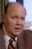

Country:United States, 84 minutes
Spoken languages:English
Genres:Horror
Director(s):Paul Wendkos
Writer(s):Jimmy Sangster
Video Codec:Unknown
Number: 3042


Certification:NR
Storyline:
Dack Rambo and Elyssa Davalos star as sweethearts Andy Stuart and Jessica Gordon. The course of true love is messed up when Satan claims Jessica as his own personal property. Desperately, Andy turns to a pair of priests, Fathers Kemschler and Wheatley, for spiritual guidance, not to mention a bit of brute force in purging poor Jessica of her demons.
Cast: 


Medium: Original DVD,
Comments: Part of: Horror Classics - 100 Movie Pack
Loaned: No
Aspect ratio: Unknown